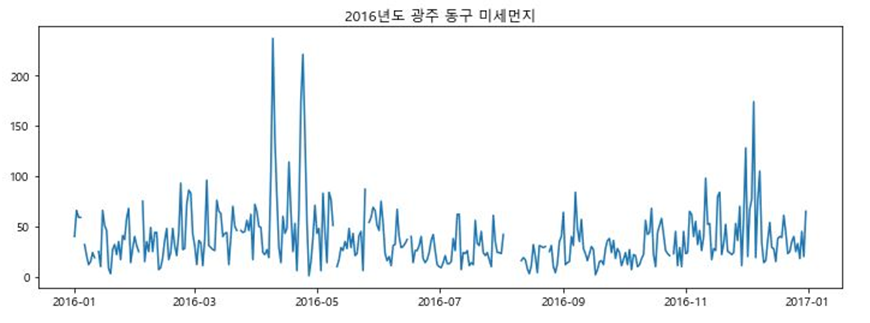
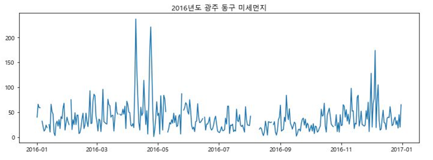
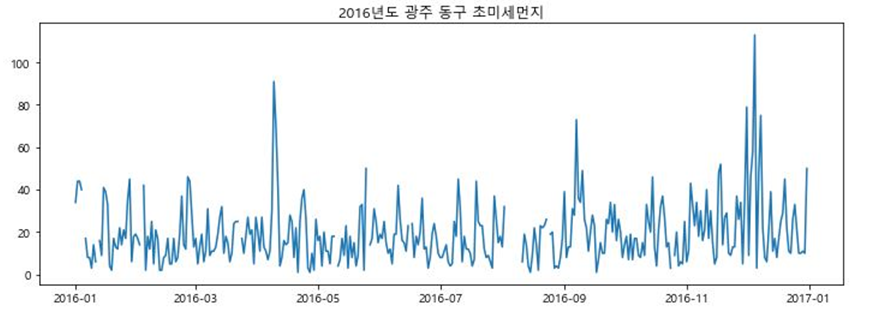

평균기온과 미세먼지 상관관계 그래프
2016년부터 전국으로 초미세먼지 예보를 확대
16년 WHO는 세계인구의 92%이상이 대기오염에 영향을 받고 있다고 발표
황사 등 미세먼지 고농도현상이 빈번한 봄철과 겨울철 가장 높은 농도 수준을 나타났으며, 강우가 빈번한 여름철(7월~9월)에낮은 수준을 보였다.
미세먼지 주의보,경보 발생횟수와 일수
2016년도 미세먼지 주의보 발령횟수:6
2016년도 미세먼지 주의보 발령일수:7
2016년도 미세먼지 경보 발령횟수:0
2016년도 미세먼지 경보 발령횟수:0